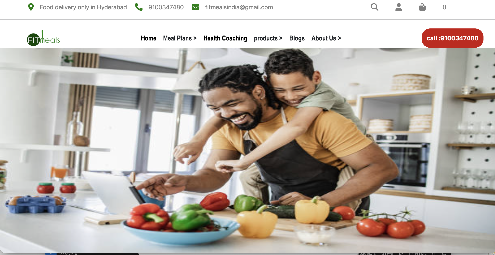
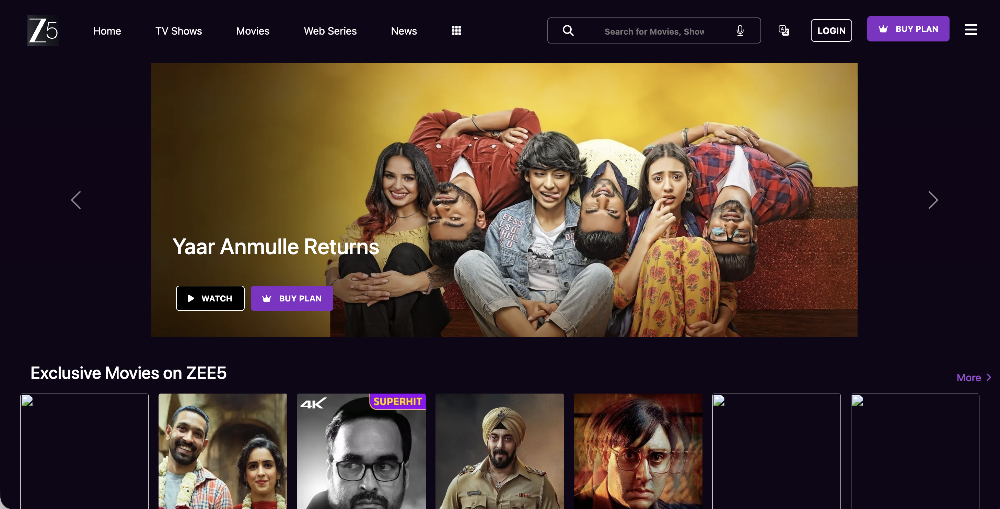
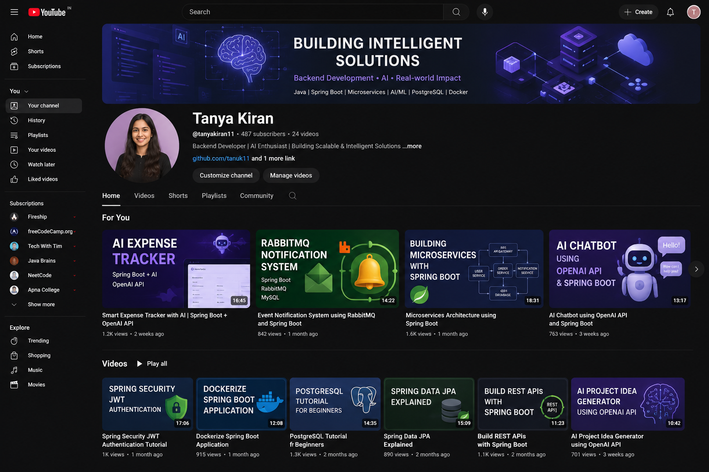

Tanya Kiran
I build scalable, well-observed backend systems in Java & Spring Boot.
Associate Software Developer building microservices in a distributed system — focused on clean REST APIs, efficient queries, and reliable, traceable services.
01 — about
Backend by craft, not by accident
I'm a backend engineer building distributed systems in Java and Spring Boot. My day-to-day spans REST API design, SQL optimization, event-driven messaging with RabbitMQ, and end-to-end observability with OpenTelemetry, Prometheus, and Grafana.
I moved into engineering deliberately — an intensive backend program at Masai School after my BCA, then a full-time role where I now own services in production. I care about systems that are fast, reliable, and easy to debug, and I like turning vague performance problems into measured wins.
Currently open to backend engineering roles, remote or hybrid.
02 — experience
Where I've shipped
- Built and deployed Java & Spring Boot microservices on PostgreSQL within a distributed system.
- Improved API response times through SQL query optimization and caching.
- Introduced an event-driven architecture with RabbitMQ and Docker for asynchronous, decoupled services.
- Set up centralized logging and tracing with OpenTelemetry, Logstash, Prometheus, and Grafana to monitor and quickly diagnose issues.
- Managed Amazon PPC campaigns and turned performance data into actionable client recommendations — sharpening the user-and-impact lens I bring to API design.
- Facilitated cybersecurity training and gave technical guidance to learners — where I confirmed engineering was the path I wanted to commit to.
03 — skills
The toolkit
Grouped the way I actually use them — from writing the service to keeping it observable in production.
Languages
Frameworks
Databases
Messaging
DevOps & Cloud
Observability
Architecture & APIs
Testing & Tools
Soft Skills
04 — work
Professional work
A unified view of what I build day to day and what I've shipped on my own — backend services, full-stack experiments, and front-end projects.
Amplicomm · Associate Software Developer
Backend microservices platform
The systems I work on day to day — Spring Boot services in a distributed backend, communicating over REST and asynchronous messaging, with full observability so problems are quick to find.
- Designed and built Java & Spring Boot microservices backed by PostgreSQL.
- Built and tuned REST APIs with SQL optimization and caching.
- Introduced event-driven messaging with RabbitMQ; containerized services with Docker.
- Set up observability — OpenTelemetry tracing, Prometheus/Grafana metrics, Logstash logs.

Fit Meal
A product website with login/sign-up, cart, search, and checkout flows.

Zee5 Clone
A streaming UI with social sign-in, content browsing, and user authentication.

Mini YouTube
A lightweight video app — search anything and play YouTube videos inline.
04.1 — recent activity
What I've been building lately
Live contribution graph straight from my GitHub — it updates on its own as I push code.
github.com/tanuk11 — click to view repositories
05 — education
Foundations
Java Backend Development
Masai School — intensive, project-based backend engineering program.
Bachelor of Computer Applications (BCA)
Nalanda College, Patliputra University.
06 — contact
Let's build something reliable
Open to backend engineering roles, remote or hybrid. The fastest way to reach me is email.
tanyakiran5@gmail.com